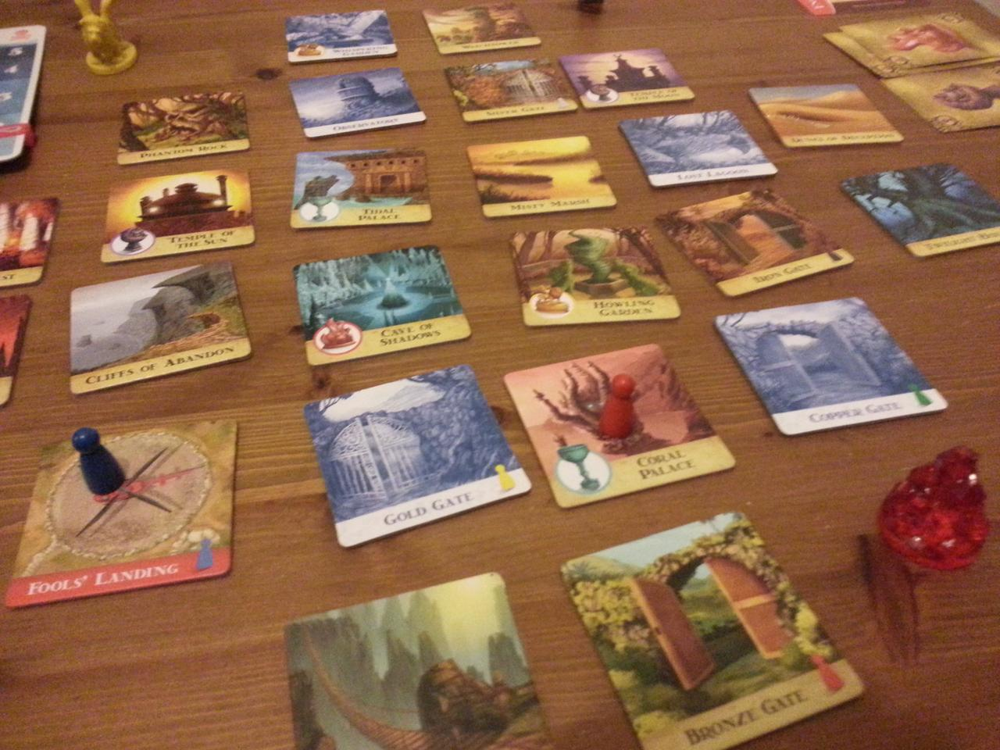
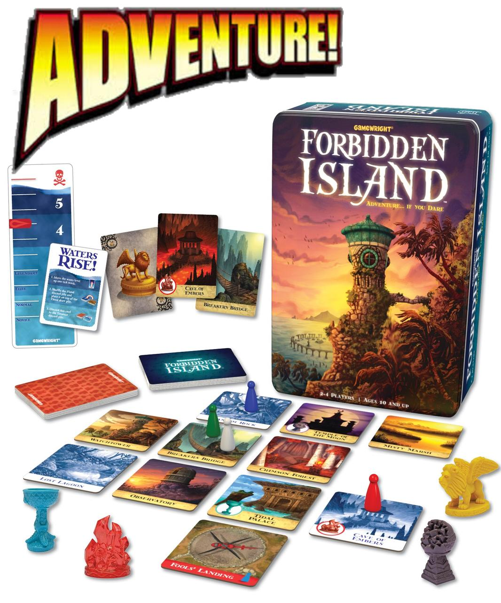
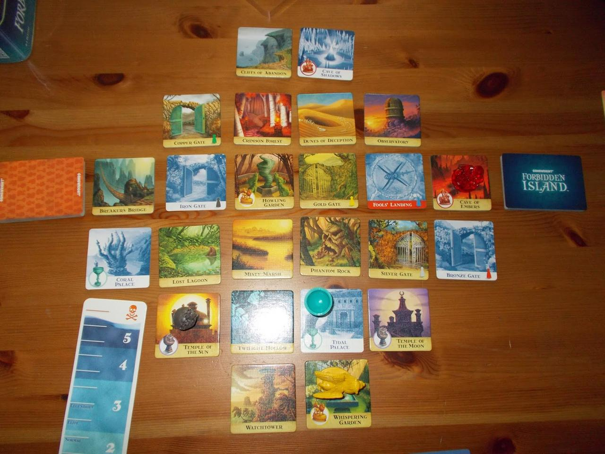

It was a rainy, cold day when I was heading to the helicopter pad in my car. David Bowie, Underground was playing on the radio. After weeks of preparation, planning and recruiting, the day had finally come. Just a week before today, I had finally managed to recruit a partner for this mad adventure. Damien, an engineer of un-matched skill and with an expertise in shoring up floods. Damien had travelled ahead of me to the island. He said he would start his work at the Copper Gate. Time was of the essence! I slammed the brakes of the car and flung the door open when it came to a standstill near the helicopter. I boarded the aircraft and went through the startup routine as I had done countless times before. A single thought in my head, we must get those four relics of the Island.

Soon I found myself flying over the island, the water level had already risen. I could see The Observatory and the Tidal Palace had already flooded. I hurried the helicopter on, Fools Landing was just North of the Observatory, I hoped it had not flooded yet. As I neared the landing, I could see Damien had done a good job shoring up the Copper Gate. Fools Landing had not flooded. I tried contacting Damien on the radio, no answer. I landed the aircraft and tried Damien once more. His haggard voice came through, “Edwin, no time to explain, head over to the Tidal Palace and start shoring it up. We have already lost the Coral Palace, if we lose the Tidal palace we will have no chance of retrieving the Ocean’s Chalice.” I rushed West and reached the Tidal Palace in the nick of time. Grabbing some of the sandbags I started shoring up the palace. Not long after I saw Damien wading through the water moving towards me. He cried over the sound of rushing and slushing water “I have the four keys needed to unlock the chalice, I will go grab it, you keep the water at bay as best as you can.” I barely heard it, water had filled my ears and the wind was buffeting them without mercy.
Having done the best job possible at the palace I continued on, hoping and trusting in Damien’s experience to get the job done. I reached The Tower and as I headed up hastily, I glanced out of the few windows I passed. I noticed how bad the situation had gotten already. We had little to no time left if we wanted to succeed. Almost half the Island had sunken beneath the water, The Crimson Forest, The Lost Lagoon and many more. Only a few key places were left standing. The ones we needed to get the relics from were still there. When I reached the top of the tower, my worst fear became reality. Fools Landing had become flooded, it would just be a matter of time before we lost our only means of escape.

Running down the stairs like a bat out of hell, fear and doubt creeping into my heart, I heard Damien again. He had made it to the tower. Even more astonishing, he had managed to grab all four relics. He waved them in the air, that big silly smile on his face. I nodded, and yelled out, “Fools Landing is flooded, we need to head over there!” I saw his smile fade from his face and the reality sink in. As I reached the bottom of the tower, Damien had managed to put all the relics in his rucksack. We ran towards Fools Landing. We had one chance, The Cliffs Of Abandon, the only route left open to us to reach the landing. As I reached the top of the cliffs first I peered into the distance blocking out the rain and wind with my arms and hands as much as I could. I fell to my knees, Fools Landing was no more. I saw the blades of the helicopter protrude from the waves as it was toppled on its side by the violent current of the rushing water. We had failed.

We had failed, we looked at the state of play on the board and then at each other. We were so close. If only we had given a bit more thought to the actions we made near the end of the game. I felt that, having grabbed all four relics, we had lost sight of actually getting off the Island. We did not mind losing, even on an easy a level as Novice. This game sure makes you think cooperatively. What cards have already been and what is still to come? How can we combine our moves, abilities and cards to optimise our path and reach our goal. All good cooperative fun packed in thirty to forty five minutes of play. We were playing it with just the two of us but it allows up to four players. This does not make is easier though, as cycling through the deck will increase and the chance of flooding will increase.
I remember picking up this game, we had already bought Forbidden Desert and to make the set complete we thought we would add Forbidden Island to the collection. It comes in a very nicely decorated metallic box that fits nicely on your bookshelf. We had heard of Forbidden Island through Will Wheaton’s show, Tabletop. At the time however there seemed to be a rush on games played on that show. So the only copy we were able to purchase was its equally fun and intriguing sibling Forbidden Desert. Many of the mechanics used in both games are similar, yet the flavour and play is different.